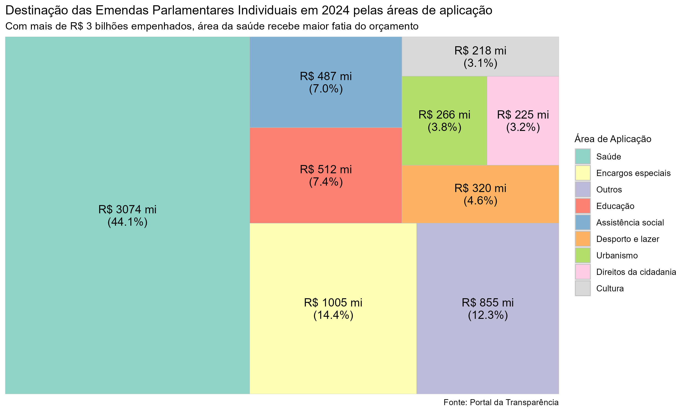
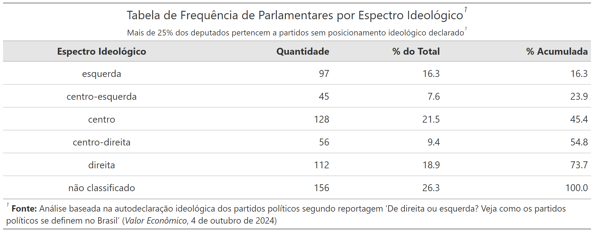
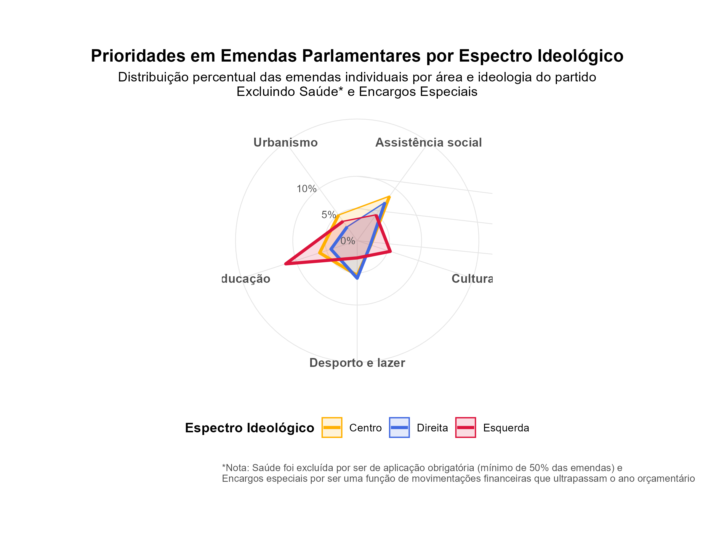

Análise Exploratória de Dados de Emendas Parlamentares em 2024
1. Introdução
1.1 Descrição Geral
Todo ano, deputados e senadores têm a oportunidade de direcionar parte do orçamento federal para projetos de sua escolha através das emendas parlamentares. Desde 2015, com a Emenda Constitucional 86, o governo é obrigado a executar essas emendas individuais até 1,2% da Receita Corrente Líquida, com metade desse valor indo necessariamente para a saúde.
Mas como esse dinheiro é distribuído na prática? Este estudo analisa as emendas individuais de 2024 para entender como diferentes partidos e grupos políticos escolhem investir esses recursos. Focamos apenas nas emendas individuais (deixando de lado as de bancada e comissões) para ter uma visão mais clara das prioridades de cada parlamentar.
2. Descrição dos Dados
2.1 Fontes dos Dados
- Portal da Transparência do Governo Federal
- Compilação de dados sobre emendas parlamentares individuais para 2024
- Dados obtidos periodicamente por meio dos ministérios e órgãos do Poder Executivo Federal
- Portais Legislativos (Câmara e Senado)
- Dados cadastrais dos parlamentares em exercício de 2023 a 2027
- Informações oficiais sobre deputados federais e senadores
- Valor Econômico (2024)
- Classificação ideológica autodeclarada dos partidos políticos em 2024
- Baseado em reportagem sobre auto-declaração ideológica das siglas partidárias
Fontes: - Portal da Transparência - Câmara dos Deputados - Senado Federal - Valor Econômico
2.2 Estrutura dos Dados
- Tabela de Emendas:
- Total de 17 colunas originais, incluindo detalhes orçamentários e administrativos (ex:
Numero_Emenda,Plano_Orcamentario,Valor_Restos_Pagar_Inscritos) - Colunas utilizadas na análise:
Ano,Autor_Emenda,Funcao,Valor_Empenhado
- Total de 17 colunas originais, incluindo detalhes orçamentários e administrativos (ex:
- Tabela de Deputados:
- Total de 9 colunas originais, incluindo informações administrativas (ex:
Endereco,Gabinete,Telefone) - Colunas utilizadas na análise:
Nome_Parlamentar,Partido,UF
- Total de 9 colunas originais, incluindo informações administrativas (ex:
- Tabela de Senadores:
- Total de 10 colunas originais, incluindo dados pessoais e de contato (ex:
Data_Nascimento,Chefe_Gabinete) - Colunas utilizadas na análise:
Nome_Parlamentar,Partido,UF
- Total de 10 colunas originais, incluindo dados pessoais e de contato (ex:
- Tabela de Espectros Ideológicos:
- Duas colunas:
partidoeespectro_ideologico - Ambas utilizadas na análise
- Duas colunas:
3. Perguntas de Pesquisa
1. Qual é a composição partidária dos parlamentares (deputados e senadores) em atividade no ano de 2024?
Na Figura 1, foi apresentado um gráfico de barras que ilustra a distribuição dos parlamentares por partido político, permitindo visualizar quais partidos têm maior representatividade entre os parlamentares em atividade.
2. Qual foi o montante total distribuído por cada partido por meio de emendas parlamentares individuais em 2024?
No gráfico de barras da Figura 2, foi feita uma visualização interativa que permite explorar o valor total das emendas por partido, possibilitando comparações diretas entre as diferentes legendas.
3. Como se distribuem os valores das emendas parlamentares individuais em 2024, considerando suas medidas de tendência central (média e mediana) e dispersão (desvio padrão)?
Na Figura 3 e Tabela 2, foi apresentado um histograma da distribuição dos valores e uma tabela com as principais estatísticas descritivas, permitindo compreender o padrão de distribuição dos recursos.
4. Como os parlamentares distribuiram o orçamento por meio das emendas individuais para diferentes funções (áreas de aplicação)?
Na Figura 4, foi utilizado um treemap para visualizar a proporção de recursos destinados a cada área de aplicação, destacando as áreas que receberam maior volume de recursos.
5. Qual é o espectro político dos partidos com parlamentares em atividade no ano de 2024?
Na Tabela 3, foi apresentada a classificação ideológica de cada partido político, baseada em autodeclarações das legendas, complementada pela Tabela 4 que mostra a distribuição quantitativa de parlamentares em cada espectro ideológico.
6. Nas áreas de aplicação mais frequentes (com exceção à saúde), como cada espectro ideológico distribuiu os recursos em diferentes áreas de aplicação?
Na Figura 5, foi utilizado um gráfico radar para comparar como cada espectro ideológico distribui seus recursos entre as diferentes áreas de aplicação, permitindo identificar padrões e preferências específicas de cada grupo.
4. Resultados Preliminares
Composição Partidária dos Parlamentares em 2024

Distribuição Total de Emendas Parlamentares por Partido em 2024
Estatísticas Descritivas das Emendas Parlamentares


Distribuição das Emendas por Área de Aplicação

Classificação Ideológica dos Partidos

Distribuição de parlamentares por espectro ideológico

Distribuição de Recursos por Área de Aplicação e Espectro Ideológico

7. Conclusão
Revisão dos principais resultados obtidos, discussão dos desafios enfrentados durante a análise (como a limpeza dos dados ou a classificação ideológica dos partidos) e sugestões para futuras pesquisas, como a inclusão de mais variáveis ou a expansão para outros anos de análise.
8. Referências
- Portal da Transparência do Governo: https://www.portaltransparencia.gov.br
- Câmara dos Deputados: https://www.camara.leg.br/transparencia
- Senado Federal: https://www25.senado.leg.br/transparencia
- Valor Econômico: https://valor.globo.com
https://portaldatransparencia.gov.br/origem-dos-dados